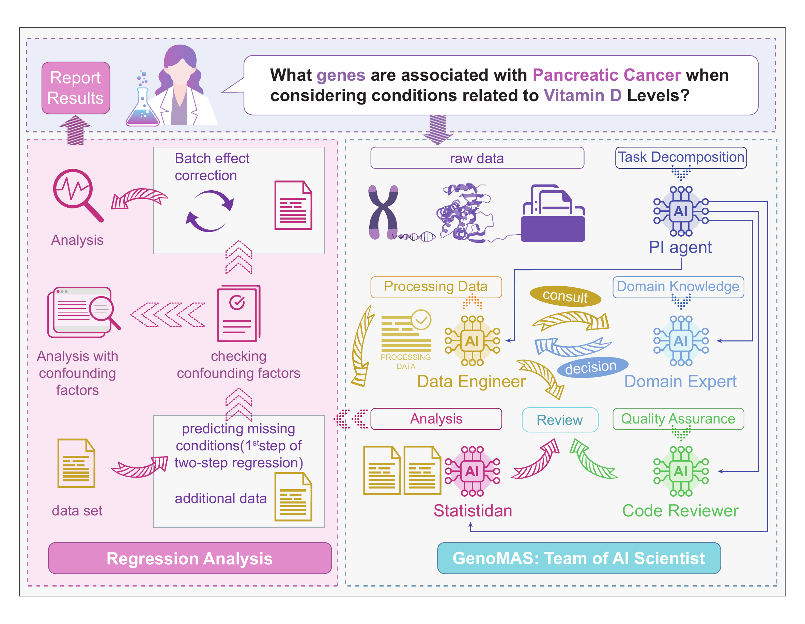
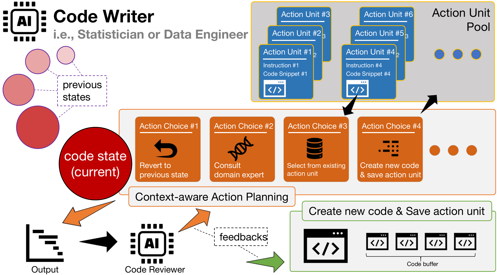
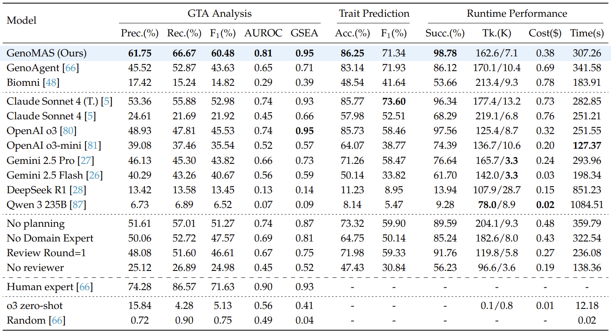
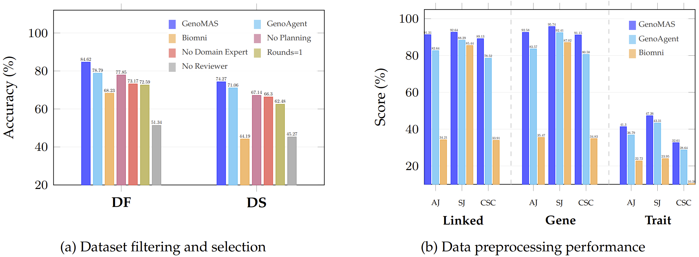
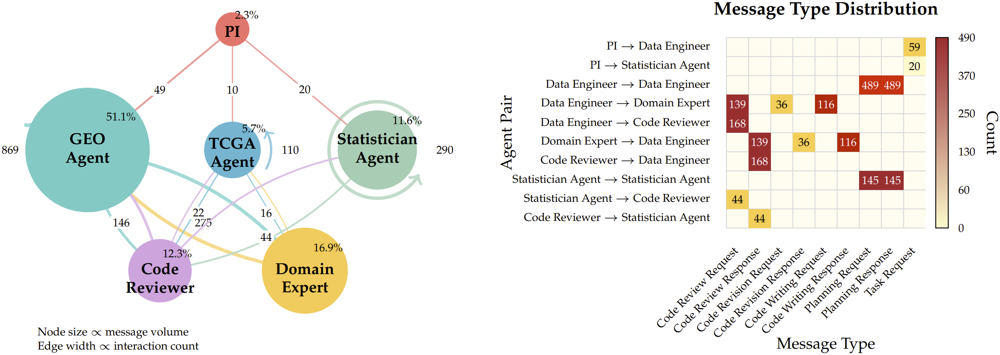

Gene expression analysis holds the key to many biomedical discoveries, yet extracting insights from raw transcriptomic data remains formidable due to the complexity of multiple large, semi-structured files and the need for extensive domain expertise. Current automation approaches are often limited by either inflexible workflows that break down in edge cases or by fully autonomous agents that lack the necessary precision for rigorous scientific inquiry.
GenoMAS charts a different course by presenting a team of LLM-based scientists that integrates the reliability of structured workflows with the adaptability of autonomous agents. GenoMAS orchestrates six specialized LLM agents through typed message-passing protocols, each contributing complementary strengths to a shared analytic canvas.
At the heart of GenoMAS lies a guided-planning framework: programming agents unfold high-level task guidelines into Action Units and, at each juncture, elect to advance, revise, bypass, or backtrack, thereby maintaining logical coherence while bending gracefully to the idiosyncrasies of genomic data.
Six specialized LLM agents working as collaborative programmers, not just tool orchestrators, enabling end-to-end code generation for complex genomic analysis tasks.
Context-aware planning mechanism that encodes workflows as editable action units, balancing precise control with autonomous error handling and adaptive decision-making.
Diverse ensemble of state-of-the-art LLMs (Claude Sonnet 4, OpenAI o3, Gemini 2.5 Pro) with complementary strengths in coding, reasoning, and scientific knowledge.
Validated on the GenoTEX benchmark with real genomic datasets, demonstrating biologically plausible gene-phenotype associations corroborated by literature.

Multi-agent collaboration in GenoMAS. Six specialized agents coordinate through typed message-passing protocols.
PI Agent: Coordinates the entire workflow, assigns tasks dynamically, and manages dependencies.
Data Engineers (GEO & TCGA): Handle platform-specific data preprocessing with specialized knowledge.
Statistician Agent: Conducts statistical analysis, regression modeling, and identifies trait-associated genes.
Code Reviewer: Validates generated code for functionality and conformance.
Domain Expert: Provides biomedical insights for biological decisions.

Planning, memory, and self-correction mechanisms of programming agents.
Workflows decomposed into semantically coherent operations that can be executed atomically, revised, or reordered based on context.
Three-stage code generation process: writing, review, and revision, with isolated context for independent assessment.
Validated code snippets stored for reuse, achieving ~65% reuse rate and substantial efficiency gains.
Consultation with Domain Expert for biomedical reasoning, gene identifier mapping, and clinical feature extraction.

GenoMAS achieves state-of-the-art performance across all metrics, with substantial improvements in F₁ score (60.48%) and AUROC (0.81) while reducing API costs by 44.7%.

Performance breakdown across dataset filtering, selection, and preprocessing tasks, demonstrating consistent superiority over baselines.
Each component contributes significantly to overall system performance and scientific rigor.

Analysis of 2,500+ agent interactions reveals efficient task coordination:
These patterns highlight the benefits of role specialization, cognitive diversity through heterogeneous LLMs, and distributed expertise in multi-agent systems.
@misc{liu2025genomasmultiagentframeworkscientific,
title={GenoMAS: A Multi-Agent Framework for Scientific Discovery via Code-Driven Gene Expression Analysis},
author={Haoyang Liu and Yijiang Li and Haohan Wang},
year={2025},
eprint={2507.21035},
archivePrefix={arXiv},
primaryClass={cs.AI},
url={https://arxiv.org/abs/2507.21035},
}University of Illinois at Urbana-Champaign
hl57@illinois.edu
University of California, San Diego
yijiangli@ucsd.edu
University of Illinois at Urbana-Champaign
haohanw@illinois.edu
This research was supported by the National AI Research Resource (NAIRR) under grant number 240283.